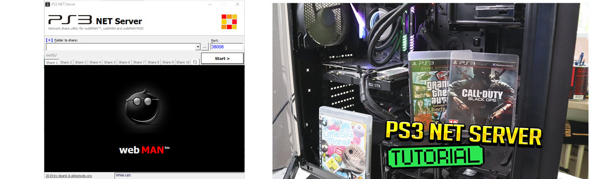
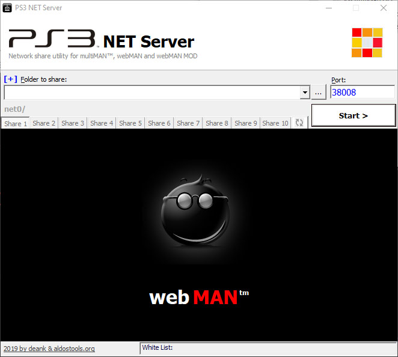

PS3 NET Server
ps3netsrv es una aplicación de servidor que se utiliza para transmitir contenido desde un servidor remoto a la PS3. Desde un pc hacia nuestra consola PS3 todos los juegos que queramos.
Para esta Guia
Requisitos para este tutorial
- PC o Notebook con Windows 7, 8, 8.1, 10
- Para descomprimir archivos .rar o .zip
Programas para este Tutorial
- RAR PS3 NET Server
- WEB Oficial github.com
- Descargamos los archivos
- Descomprimimos el archivo .rar o .zip
- PS3.NET.Server v1.0.zip
- ps3netsrv_20220330.zip
- Con la última versión disponible
- Una vez descargado nuestro archivo
- Lo extraemos y ejecutamos
- Abrimos el archivo PS3_NET_Server.exe como administrador 
- Una ves abierto buscamos la ruta donde están o estarán nuestros juegos en el PC
- Si no están podemos crear las carpetas manualmente
- Creamos PS3 y dentro creamos
- GAMES: juegos de PS3 en formato carpeta
- PS3ISO: juegos de PS3 en Formato ISO
- PSXISO: juegos de PS1 en formato ISO
- Una ves listo y cargado nuestros juegos vamos a la consola
- En la consola PS3
- Abrimos webMAN y configuramos
- Para esto vamos a Configuración de webMAN/PS3 webMAN[Configuración]
- Vamos a Buscar contenido y marcamos
- Buscar contenido Juegos/Videos por LAN PS3NETSRV#1 y colocamos la IP de nuestra Pc
- Si no la sabemos la IP de nuestra computadora
- buscamos cmd y ejecutamos
ipconfig - Y le damos a Guardar y le damos a reiniciar el sistema de PS3
- Para cargar nuestros juegos desde el HDD interno o externo (PC o Notebook)
- Nos vamos a Juegos de webMAN/Configuracion de webMAN y seleccionamos
- Actualizar juegos de webMAN y el XMB: El XMB se volverá a cargar tras actualizar la lista de juegos
- Actualizar Juegos de webMAN: La lista de juegos se mostrará la próxima vez que cargue el XMB
- Actualizar lista web de juegos: La lista de juegos en formato HTML se actualizará para el modo web
- Y estaríamos listo
Para Empezar este Tutorial
×